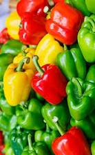
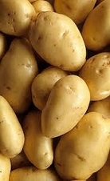
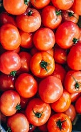
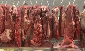
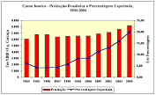

Começou a colheita do pimentão no centro-oeste de São Paulo. Os produtores comemoram o bom momento da safra.
Agricultores esperam boa safra de pimentão para o segundo semestre!
Começou a colheita do pimentão no centro-oeste de São Paulo. Os produtores comemoram o bom momento da safra.
Hoje, a caixa de 11 quilos de pimentão verde está sendo vendida a uma média de R$ 7,00. A caixa de pimentão vermelho é negociada a R$ 10, mas pode chegar a R$ 16 dependendo de como a produção vai se comportar até o final da safra.

Em julho, o preço da saca de 50 kg da batata beneficiada, ponderado pela classificação, pode ser de R$ 141,52 – valor 127% acima dos custos de produção e 40% superior às cotações de abril.
Preço das batatas pode subir no próximo mês!
Em julho, o preço da saca de 50 kg da batata beneficiada, ponderado pela classificação, pode ser de R$ 141,52 – valor 127% acima dos custos de produção e 40% superior às cotações de abril.
A expressiva alta se deve à menor oferta dos tubérculos nacionais, em decorrência do período de entressafra (proximidade do fim da safra das águas e início, ainda em ritmo lento, da colheita das secas).

O problema é que os custos de produção subiram, enquanto que o preço de venda caiu. A caixa com 24 quilos passou de R$80 no ano passado para menos de R$50 este ano.
Safra de tomate deve vir 12% menor este final de mês.
O problema é que os custos de produção subiram, enquanto que o preço de venda caiu. A caixa com 24 quilos passou de R$80 no ano passado para menos de R$50 este ano.
A alta nos custos é reflexo do dólar mais forte, que aumentou os preços dos defensivos agrícolas, a maioria deles importados. Na região de São José, por exemplo, o custo para plantar um hectare de tomate passou de R$ 100 mil para R$ 200.

O preço médio atual é o maior do ano, é 5,1% superior ao do final da primeira quinzena de novembro e está 2,0% acima do registrado no mesmo período de 2016. Fato raro este ano. Até agora, em praticamente todas as pesquisas semanais realizadas, as cotações médias das carnes eram menores que as de um ano atrás.
